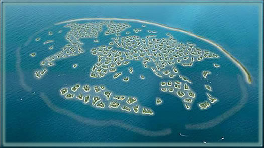
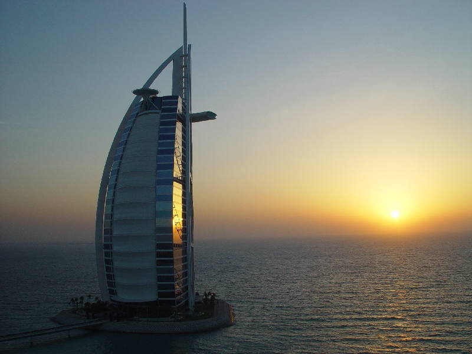

Dubai has been doing a lot of out-of-the-box stuff recently.
They got an indoor ski resort.
And a man-made island thats shaped like a palm tree.
They got an indoor ski resort.
And a man-made island thats shaped like a palm tree.
It's a nice structure. It's a shame what will happen when Dubai's economy collapses along with the oil industry.
But yes, it is rather spiffy looking.
But yes, it is rather spiffy looking.
How cool.
It's a nice structure. It's a shame what will happen when Dubai's economy collapses along with the oil industry.
Thats why they keep building structures like this, there trying to convert from oil to tourism. The islands t3chno mentioned are actually resorts and vacation home plots.
It certainly is cool looking, albeit a bit unecessary.
Man that is neat.
Yeah, I love all their unique architecture. They've been leagues ahead of most everywhere else, and this is no exception. It's truly beautiful, but I must admit that it's reeeaaaallly starting to go over the top in my opinion.
i never thought bridges could be sexy 
Dubai worries me. It seems like a primetime terrorist target; moreover, it's the equivalent of late 19th century Mexico and 1950's Cuba. It's got glitz and glamour, for sure, but it's got a growing amount of slums and poor people, and there are going to be problems.
And when there are, we can consider ourselves well and truly ****ed in the Middle East. What kind of example is that? The exact stuff the clerics have been preaching, that the Western lifestyle leads to soceital disintegration, will have come true. We will be unable to bring change to the Middle East for the next half-century.
It's a bad situation, and things like this aren't doing anything to help it.
And when there are, we can consider ourselves well and truly ****ed in the Middle East. What kind of example is that? The exact stuff the clerics have been preaching, that the Western lifestyle leads to soceital disintegration, will have come true. We will be unable to bring change to the Middle East for the next half-century.
It's a bad situation, and things like this aren't doing anything to help it.
Dubai worries me. It seems like a primetime terrorist target; moreover, it's the equivalent of late 19th century Mexico and 1950's Cuba. It's got glitz and glamour, for sure, but it's got a growing amount of slums and poor people, and there are going to be problems.Why am I not surprised...
And when there are, we can consider ourselves well and truly ****ed in the Middle East. What kind of example is that? The exact stuff the clerics have been preaching, that the Western lifestyle leads to soceital disintegration, will have come true. We will be unable to bring change to the Middle East for the next half-century.
It's a bad situation, and things like this aren't doing anything to help it.
I have been living in the middle east, saudi arabia to be specific, for over 15 years. But what you said is almost opposite, most of the countries in the middle east are /far/ above developed, and dubai is definitely not a terrorist target. Actually, there haven't been much, or any, terrorist attacks in dubai for 5, maybe 10, years.
Most western people seriously misjudge the people living in the middle east, they call them terrorists, we call them liars, its a silent war. It's actually the religion Islam that has caused this misunderstanding between the middle east and western civilisation.
Not being able to bring change to the middle east for a half century is what I agree with, but you seem sad the way you wrote it.
I don't see the point in making structures that big. I mean, they're already building the Burj Dubai, and that's going to be over 2,000 ft. If they're going to make a giant bridge, they could at leas t try to make it a little smaller. Didn't they learn not to push their workers to hard when there was strike action by the people building the Burj Dubai?
Looks like a good skate ramp. 
However, that does look really neat.
However, that does look really neat.
I'd hate to be one of the structural engineers for that...
Scrub that. MONAYS
I love it when stuff like this is done.
I also want to see if the World Islands of Dubai pan out too.
Scrub that. MONAYS
I love it when stuff like this is done.
I also want to see if the World Islands of Dubai pan out too.

havnt seen about the bridge yet and i usually like finding out about new uber construction plans.
anyone heard of the revolving skyscraper planned for moscow? or the 4km high structure in japan (latest update says this one has been cancelled due to lack of resourse tho)
and i usually like finding out about new uber construction plans. anyone heard of the revolving skyscraper planned for moscow? or the 4km high structure in japan (latest update says this one has been cancelled due to lack of resourse tho)
Why am I not surprised...
I have been living in the middle east, saudi arabia to be specific, for over 15 years. But what you said is almost opposite, most of the countries in the middle east are /far/ above developed, and dubai is definitely not a terrorist target. Actually, there haven't been much, or any, terrorist attacks in dubai for 5, maybe 10, years.
Hey, let's breeze slightly over the point! Of course they're developed. But so was Mexico in 1900. So was Cuba in 1950. However, there is a ton of social inequality in Dubai, and I don't doubt it will lead to revolt. See, the people of Dubai-the real Dubaians, the poor people of Dubai-see rich people living in wonderful houses, building their own islands, while they sleep on dirty streets and in back alleys and have to resort to prostitution to make a living. What kind of view are they getting of Western culture?
And the Middle East may be developed, but it's not westernized. Iran and Saudi Arabia appear absolutely ridiculous to someone like me. Executions are public entertainment. Women cannot leave the house without their husbands. Dubai, however, is far more liberal, and that's why it's considered, and rightly so, a part of the West in the Middle East. In Dubai, people do have these freedoms-but there are also few social services and no controls on business, so Dubai is essentially run by an aristocracy, and the poor are screwed over repeatedly. This is the exact thing that makes people turn to terrorism. That's the culture that, in late 1800s America, allowed for the rise of robber barons. That's the inequality that caused the Mexican revolution and the Communist takeover of Cuba. In fact, that's the very inequality that lead to Communism, that was the cause of the rise of Lenin and thus to the rise of Stalin. That's what lead Italy to, in 1922, put the fascist Benito Mussolini in power. That inequality is what caused the rise of Adolf Hitler in the Weimar Republic, forming Nazi Germany and thereby causing the Holocaust.
Inequality like that lead to the Stalinist purges (15 million deaths), it lead to the Ukraine famine (7 million), the Holocaust (11 million), and World War II (>100 million). That is a big problem, don't you think?
So what I want to see is for Dubai to succeed, for it to become a real leader and a real example, like Hong Kong was. I don't want it to become another Cuba.
.
Hey, let's breeze slightly over the point! Of course they're developed. But so was Mexico in 1900. So was Cuba in 1950. However, there is a ton of social inequality in Dubai, and I don't doubt it will lead to revolt. See, the people of Dubai-the real Dubaians, the poor people of Dubai-see rich people living in wonderful houses, building their own islands, while they sleep on dirty streets and in back alleys and have to resort to prostitution to make a living. What kind of view are they getting of Western culture?
Why am I not surprised...
I have been living in the middle east, saudi arabia to be specific, for over 15 years. But what you said is almost opposite, most of the countries in the middle east are /far/ above developed, and dubai is definitely not a terrorist target. Actually, there haven't been much, or any, terrorist attacks in dubai for 5, maybe 10, years.
And the Middle East may be developed, but it's not westernized. Iran and Saudi Arabia appear absolutely ridiculous to someone like me. Executions are public entertainment. Women cannot leave the house without their husbands. Dubai, however, is far more liberal, and that's why it's considered, and rightly so, a part of the West in the Middle East. In Dubai, people do have these freedoms-but there are also few social services and no controls on business, so Dubai is essentially run by an aristocracy, and the poor are screwed over repeatedly. This is the exact thing that makes people turn to terrorism. That's the culture that, in late 1800s America, allowed for the rise of robber barons. That's the inequality that caused the Mexican revolution and the Communist takeover of Cuba. In fact, that's the very inequality that lead to Communism, that was the cause of the rise of Lenin and thus to the rise of Stalin. That's what lead Italy to, in 1922, put the fascist Benito Mussolini in power. That inequality is what caused the rise of Adolf Hitler in the Weimar Republic, forming Nazi Germany and thereby causing the Holocaust.
Inequality like that lead to the Stalinist purges (15 million deaths), it lead to the Ukraine famine (7 million), the Holocaust (11 million), and World War II (>100 million). That is a big problem, don't you think?
So what I want to see is for Dubai to succeed, for it to become a real leader and a real example, like Hong Kong was. I don't want it to become another Cuba.
.
the thing is tho - for it to become that it will have to get though it itself with as little help from others as possible. they will have to overcome these problems. all of the middle eastern countries have to go through these phases. it will never work if people of the west go into a country and implement their culture there (wheather actively like iraq or passively by the countries just wanting to seem more western). those countries have their own culture and while it can be influenced by others, it shouldnt be changed. and either way - revolutions like this arnt always bad. rise of lenin for example ended up with stalin leading the USSR. with him at its head that country became the most powerful in the world at its time, the people there in generall moved from the tzarist opression to a state where they were better off than now and the industry boomed. Cuba - with the rise of communism had advances like having health services that are - even now - concidered some of the best in the world (who uses them is different). If you implement different culture to people not ready for it. Maybe dubai should be pushing the good aspects of their own culture forward, than trying to be more western.
I say all that because of you saying "they are not westernised" as if they should be. i may have mistook your intention - but thats what it sounded like.
I don't see the point in making structures that big. I mean, they're already building the Burj Dubai, and that's going to be over 2,000 ft. If they're going to make a giant bridge, they could at leas t try to make it a little smaller. Didn't they learn not to push their workers to hard when there was strike action by the people building the Burj Dubai?
Haven't you ever heard of showing off?

I say all that because of you saying "they are not westernised" as if they should be. i may have mistook your intention - but thats what it sounded like.
It could be said that Westernization is the only correct direction. From what society and economics are shaping up to be, that might not be such a bad idea...
and either way - revolutions like this arnt always bad. rise of lenin for example ended up with stalin leading the USSR. with him at its head that country became the most powerful in the world at its time, the people there in generall moved from the tzarist opression to a state where they were better off than now and the industry boomed. Cuba - with the rise of communism had advances like having health services that are - even now - concidered some of the best in the world (who uses them is different).Please be joking. You're calling Stalin, responsible for more deaths than any other person in world history, partially responsible for the cold war, the man who signed a deal with the Nazis, a good guy?
And Castro? Good compared to Batista, I suppose, but not good all-around.
More importantly, it's not that these countries failed or became weak, but that they became autocratic, poverty stricken, and yes, general failures. Ever read 1984? You should. Russia isn't well off even today, and neither is Cuba. Even Mexico isn't doing so hot after their revolution, and it was for democracy.
The bottom line is: We, as Americans, were lucky, dude. Almost every other revolution has produced a deeply flawed soceity. It was thanks to the wisdom and restraint of those we call the Founding Fathers that this worked, you see? Dubai has no restraint. It will fail if the current modus operandi continues.
I say all that because of you saying "they are not westernised" as if they should be. i may have mistook your intention - but thats what it sounded like.It could be said that Westernization is the only correct direction. From what society and economics are shaping up to be, that might not be such a bad idea...
look what westernisation did to iraq. it left it in a state a lot worse than it was in before.
Please be joking. You're calling Stalin, responsible for more deaths than any other person in world history, partially responsible for the cold war, the man who signed a deal with the Nazis, a good guy?
And Castro? Good compared to Batista, I suppose, but not good all-around.
More importantly, it's not that these countries failed or became weak, but that they became autocratic, poverty stricken, and yes, general failures. Ever read 1984? You should. Russia isn't well off even today, and neither is Cuba. Even Mexico isn't doing so hot after their revolution, and it was for democracy.
The bottom line is: We, as Americans, were lucky, dude. Almost every other revolution has produced a deeply flawed soceity. It was thanks to the wisdom and restraint of those we call the Founding Fathers that this worked, you see? Dubai has no restraint. It will fail if the current modus operandi continues.
I never said he was a "good" guy - i said that he made the country powerful and the population better off than it is now. the deal with the nazis helped get russia into military order by giving it time. stalin knew hitler would attack with or without the deal, but this gave him more time to build up some sort of force.
Russia right now is still one of the super-powers. the population around is crap right now (as i said - better off in the days of USSR) but its the country with the second most rich people in the world. its a rich country - just that that money goes to the wrong places. The revolution that produced flaws in russia was the one to end the soviet union - not to start it. also other revolutions like the one in britain where Cromwell chopped the kings head off, or the french revolution, what about those?
Dubai is the Singapore of the Middle East. I don't think people understand its economic situation fully, but it's quite the hopeful city. Its leader bin Rashid Al Maktoum walks around without security detail, like some sort of Western playboy. The area is very peaceful and people abroad overestimate the chances of a terrorist attack in the UAE.
Bin Rashid Al Maktoum is quickly removing Dubai's dependency on the oil market, through measures like commercializing and making Dubai a prime tourist location. Less than 6% of Dubai's economy comes from its oil and natural gas reserves.(scr) And this value is dropping rapidly. Dubai's GDP is now about US$37 billion--compare to the Singapurian GDP of US$140 billion. So... it's getting up there, economically.
They will shortly have the world's largest mall, the world's largest tower, and possess an economy to rival the cities of South Korea and Japan.
The Middle East needs Dubai. It will be the next global city--and it is in a prime trade location, between the UK, Signapore, Australia, and India. The city of Dubai is bringing the Middle Eastern culture into the new millennium. Middle Eastern and African nations have difficulty acquiring capital and, for the first time, someone who could have otherwise been a corrupt, money-grubbing dictator has given his livelihood and his estate to the people.
As for the social aspects of this culture, bin Rashid Al Maktoum is putting every dollar of his fortune into public education and public health systems. He's making an amazing investment into the Middle East and Dubai and his efforts should be applauded.
World's tallest hotel! Looks like a giant fishing boat:
Bin Rashid Al Maktoum is quickly removing Dubai's dependency on the oil market, through measures like commercializing and making Dubai a prime tourist location. Less than 6% of Dubai's economy comes from its oil and natural gas reserves.(scr) And this value is dropping rapidly. Dubai's GDP is now about US$37 billion--compare to the Singapurian GDP of US$140 billion. So... it's getting up there, economically.
They will shortly have the world's largest mall, the world's largest tower, and possess an economy to rival the cities of South Korea and Japan.
The Middle East needs Dubai. It will be the next global city--and it is in a prime trade location, between the UK, Signapore, Australia, and India. The city of Dubai is bringing the Middle Eastern culture into the new millennium. Middle Eastern and African nations have difficulty acquiring capital and, for the first time, someone who could have otherwise been a corrupt, money-grubbing dictator has given his livelihood and his estate to the people.
As for the social aspects of this culture, bin Rashid Al Maktoum is putting every dollar of his fortune into public education and public health systems. He's making an amazing investment into the Middle East and Dubai and his efforts should be applauded.
World's tallest hotel! Looks like a giant fishing boat:

Woah, massive. Very cool.
Quote: Centigrade3, February 28, 2008 07:55 amcontent cut out to save space
That's certainly surprising, and I'm going to have to partially retract my initial diagnosis (which was based on a Newsweek article, admittedly), and say that Dave is probably right.
However, that's not the typical Davesque prose I was expecting.
for the first time, someone who could have otherwise been a corrupt, money-grubbing dictator has given his livelihood and his estate to the people.First time? I, sir, disagree. That guy was the best thing that ever happened to Mexico.
And Cossack, nobody was better off under the Soviets. At the very least, the Ukrainians never want that to happen again.
The current Mexican president ain't so bad either, actually. http://en.wikipedia.org/wiki/Vicente_Fox
EDIT: Whoops, I suppose he's co-president now.
EDIT: Whoops, I suppose he's co-president now.
And Cossack, nobody was better off under the Soviets. At the very least, the Ukrainians never want that to happen again
as someone who has family throughout the former USSR and someone who was born in it i have plenty of sources from all backgrounds who pefferd the soviet country. you may not believe that - but it is true